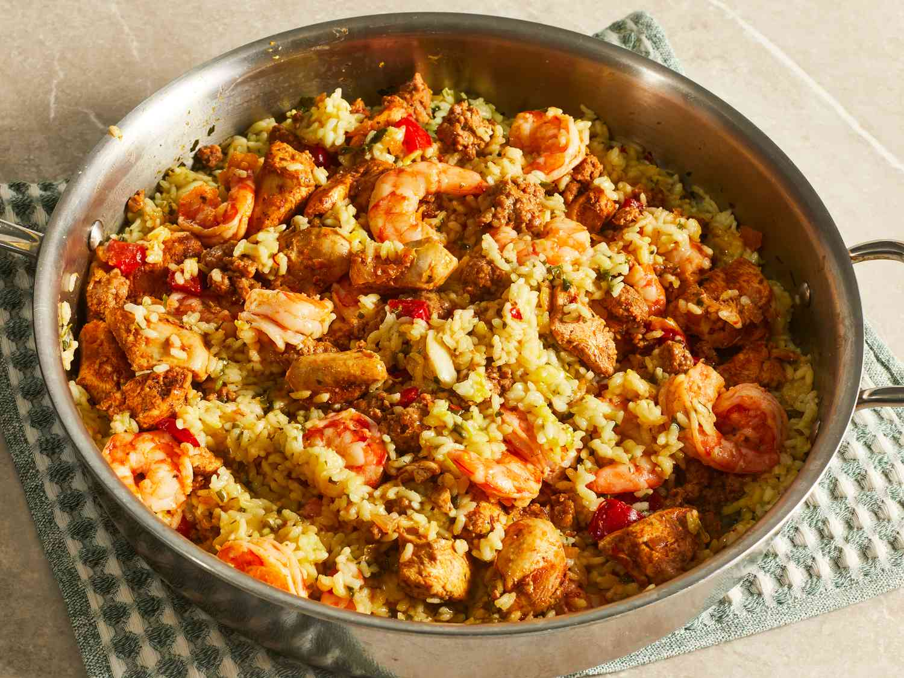
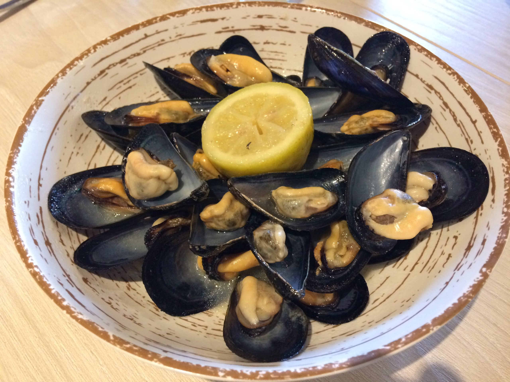
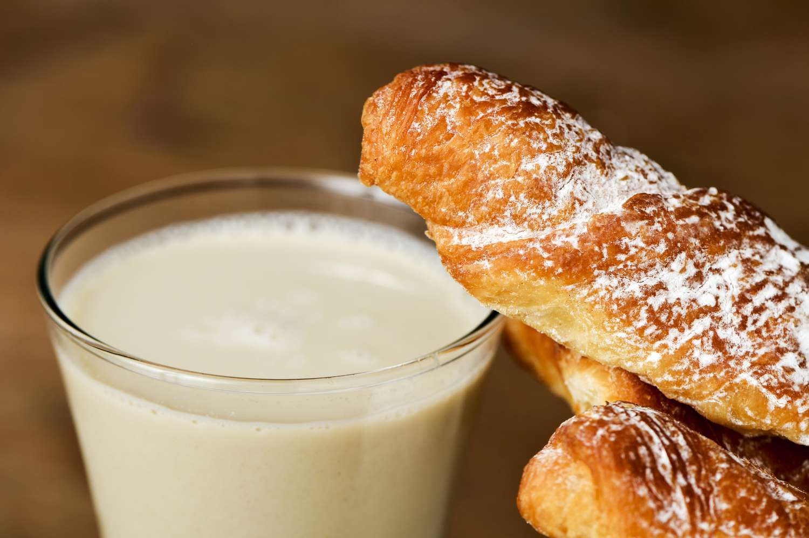

|
Paella:
Paella was originally meant for workers in the field but
now the dish is one of the most well-known dishes from
Valencia. It includes delicious chicken, meat and white
beans called garrafó and other popular variations of
paella include seafood as well with a layer of rice at
the bottom called socarrat.

|
|
Coca:
This dish is a flatbread served with a variety of toppings and
is a very popular pastry in Valencia. It's sweet and savory will
be sure to die for.
|
|
Clóchinas:
This unique dish has mussels from the local coastline in
Valencia and are usually topped with some lime to give a sour
topping. Due to Valencia being near the sea, the seafood is
mouth-watering.

|
Fartons:
Fartons are a sweet bread with powdered sugar sprinkled on top.
It truly is a favourite for all you with a sweet-tooth.

|